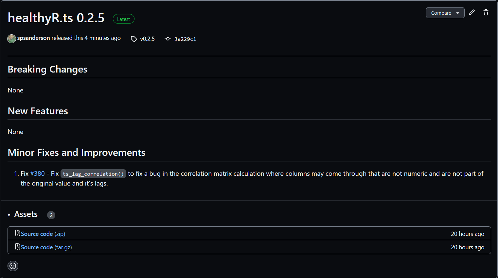

tidy_bernoulli(.n = 50, .prob = 0.1, .num_sims = 1)
util_bernoulli_param_estimate(.x, .auto_gen_empirical = TRUE)
util_bernoulli_stats_tbl(.data)Introduction
I have made several updates to {healthyverse}, this has resulted in new releases to CRAN for {healthyR.ai}, {healthyR.ts}, and {TidyDesnsity}.
TidyDensity

healthyR.ai

healthyR.ts

Some New Functions
Let’s take a look at some new functions.
TidyDensity
For TidyDensity a new distribution was added, welcome tidy_bernoulli(). This distribution also comes with the standard util_distname_param_estimate() and the util_distname_stats_tbl() functions. Let’s take a look at the function calls.
Let’s see them in use.
library(TidyDensity)
library(dplyr)
tb <- tidy_bernoulli()
tb# A tibble: 50 × 7
sim_number x y dx dy p q
<fct> <int> <int> <dbl> <dbl> <dbl> <dbl>
1 1 1 0 -0.338 0.0366 0.9 0
2 1 2 0 -0.304 0.0866 0.9 0
3 1 3 0 -0.270 0.187 0.9 0
4 1 4 0 -0.236 0.369 0.9 0
5 1 5 0 -0.201 0.663 0.9 0
6 1 6 0 -0.167 1.09 0.9 0
7 1 7 0 -0.133 1.63 0.9 0
8 1 8 1 -0.0988 2.22 1 1
9 1 9 0 -0.0646 2.76 0.9 0
10 1 10 0 -0.0304 3.14 0.9 0
# … with 40 more rowsutil_bernoulli_param_estimate(tb$y)$combined_data_tbl
# A tibble: 100 × 8
sim_number x y dx dy p q dist_type
<fct> <int> <dbl> <dbl> <dbl> <dbl> <dbl> <fct>
1 1 1 0 -0.338 0.0366 0.92 0 Empirical
2 1 2 0 -0.304 0.0866 0.92 0 Empirical
3 1 3 0 -0.270 0.187 0.92 0 Empirical
4 1 4 0 -0.236 0.369 0.92 0 Empirical
5 1 5 0 -0.201 0.663 0.92 0 Empirical
6 1 6 0 -0.167 1.09 0.92 0 Empirical
7 1 7 0 -0.133 1.63 0.92 0 Empirical
8 1 8 1 -0.0988 2.22 1 0 Empirical
9 1 9 0 -0.0646 2.76 0.92 0 Empirical
10 1 10 0 -0.0304 3.14 0.92 0 Empirical
# … with 90 more rows
$parameter_tbl
# A tibble: 1 × 8
dist_type samp_size min max mean variance sum_x prob
<chr> <int> <dbl> <dbl> <dbl> <dbl> <dbl> <dbl>
1 Bernoulli 50 0 1 0.08 0.0736 4 0.08util_bernoulli_stats_tbl(tb) %>%
glimpse()Rows: 1
Columns: 18
$ tidy_function <chr> "tidy_bernoulli"
$ function_call <chr> "Bernoulli c(0.1)"
$ distribution <chr> "Bernoulli"
$ distribution_type <chr> "discrete"
$ points <dbl> 50
$ simulations <dbl> 1
$ mean <dbl> 0.1
$ mode <chr> "0"
$ coeff_var <dbl> 0.09
$ skewness <dbl> 2.666667
$ kurtosis <dbl> 5.111111
$ mad <dbl> 0.5
$ entropy <dbl> 0.325083
$ fisher_information <dbl> 11.11111
$ computed_std_skew <dbl> 3.096281
$ computed_std_kurt <dbl> 10.58696
$ ci_lo <dbl> 0
$ ci_hi <dbl> 1healthyR.ai
This was a minor patch release that exported some previously internal only functions and fixed an error with the custom recipe steps. One of the functions that has been exported is hai_data_impute()
Let’s take a look.
hai_data_impute(
.recipe_object = NULL,
...,
.seed_value = 123,
.type_of_imputation = "mean",
.number_of_trees = 25,
.neighbors = 5,
.mean_trim = 0,
.roll_statistic,
.roll_window = 5
)Let’s take a look at an example of it’s use.
library(dplyr)
library(recipes)
library(healthyR.ai)
date_seq <- seq.Date(from = as.Date("2013-01-01"), length.out = 100, by = "month")
val_seq <- rep(c(rnorm(9), NA), times = 10)
df_tbl <- tibble(
date_col = date_seq,
value = val_seq
)
df_tbl# A tibble: 100 × 2
date_col value
<date> <dbl>
1 2013-01-01 0.325
2 2013-02-01 -0.308
3 2013-03-01 0.562
4 2013-04-01 0.0805
5 2013-05-01 -0.528
6 2013-06-01 -2.49
7 2013-07-01 -0.964
8 2013-08-01 -0.337
9 2013-09-01 -1.08
10 2013-10-01 NA
# … with 90 more rowsrec_obj <- recipe(value ~ ., df_tbl)
hai_data_impute(
.recipe_object = rec_obj,
value,
.type_of_imputation = "roll",
.roll_statistic = median
)$impute_rec_obj %>%
get_juiced_data()# A tibble: 100 × 2
date_col value
<date> <dbl>
1 2013-01-01 0.325
2 2013-02-01 -0.308
3 2013-03-01 0.562
4 2013-04-01 0.0805
5 2013-05-01 -0.528
6 2013-06-01 -2.49
7 2013-07-01 -0.964
8 2013-08-01 -0.337
9 2013-09-01 -1.08
10 2013-10-01 -0.322
# … with 90 more rowshealthyR.ts
This was a minor patch release fixing the function ts_lag_correlation() when the column that was the value was not explicitly called…value.
Thank you!